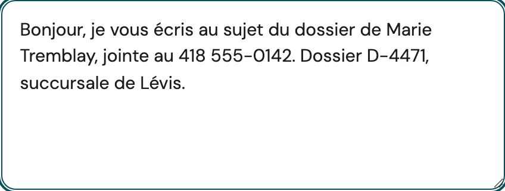
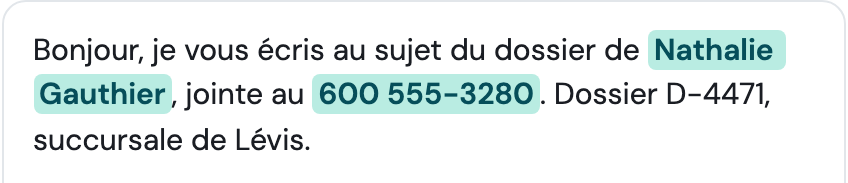

Et pourtant, au bureau, tout le monde sait de qui on parle.
Trois gestes avant de coller un texte dans une IA.
laveille.ai · Stéphane Lapointe Glisse →Dans un bureau de quinze personnes, ils désignent quand même quelqu’un. La loi québécoise parle d’un renseignement qui identifie directement OU indirectement.
Source : Commission d’accès à l’information du Québec.
laveille.ai · Stéphane Lapointe Glisse →Relevé le 24 septembre 2026, documentation des trois fournisseurs. Les offres d’entreprise ont des règles différentes.
laveille.ai · Stéphane Lapointe Glisse →
Mettez-y des repères que vous connaissez : un nom, un téléphone, un lieu. Et surtout vos propres codes de dossier : ce sont eux que personne ne pense à vérifier.
laveille.ai/outils/anonymiseur - gratuit, sans compte.
laveille.ai · Stéphane Lapointe Glisse →
Cliquez sur « Détecter et anonymiser ». « Marie Tremblay » devient « Nathalie Gauthier », et le téléphone change. Il ne noircit pas : il substitue, et surligne en vert ce qu’il a substitué.
Tout se passe dans votre navigateur : le texte n’est envoyé nulle part.
laveille.ai · Stéphane Lapointe Glisse →Si le doute persiste, ne collez pas. Retravaillez le texte.
Ce tri vous revient, parce que vous seul savez ce que vos codes internes désignent. Ensuite seulement : « Copier pour l’IA ».
laveille.ai · Stéphane Lapointe Glisse →Aucun logiciel n’a accès à ce contexte-là. Vous, oui. C’est tout le sens du troisième geste.
laveille.ai · Stéphane Lapointe Glisse →Cinq minutes, une fois, et vous saurez exactement ce qu’il faut relire avant de coller quoi que ce soit dans une IA.
Gratuit, sans compte.
Le texte ne quitte pas votre navigateur.